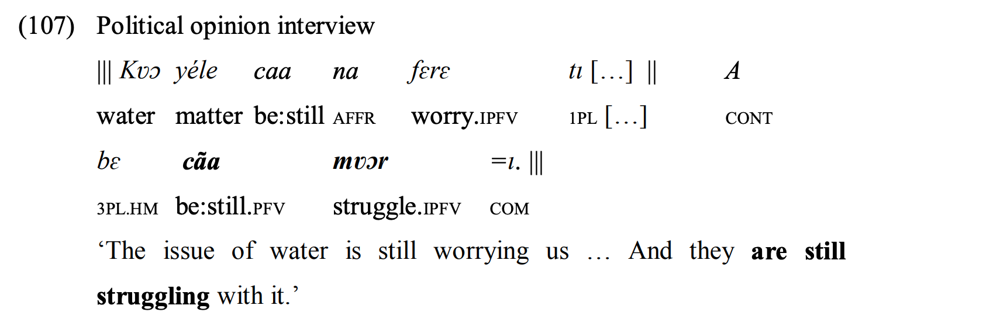
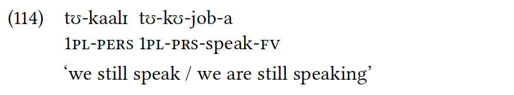

Continutives in Africa
1. Languages
All African languages included in the sample.
1.1. List
1.2. Map
2. Examples
Atlantic-Congo (> North-Central Atlantic)
Balanta-Ganja (Creissels and Biaye 2016:201)

The continuative marker: tígtà.
Atlantic-Congo (> Volta-Congo > North Volta-Congo)
Sango (Samarin 1970:105)
The continuative marker: ngba.
Atlantic-Congo (> Volta-Congo > Gur)
Northern Dagara (Mwinlaaru 2017:328)

The continuative marker: dgi.
Atlantic-Congo (> Volta-Congo > East Bantu > Corridor Bantu)
Nyakyusa-Ngonde (Persohn 2017:186)

The continuative marker: kaalɪ.
Atlantic-Congo (> Volta-Congo > East Bantu > Southern Bantu-Makua)
Zulu (Ziervogel, … Taljaard 1976:91)

The continuative marker: sa-.
Atlantic-Congo (> Volta-Congo > Central-Western Bantu)
Yansi (Mayanga 1985:111)

The continuative marker: -binde-.
Afro-Asiatic (> Semitic)
North Levantine Arabic (Versteegh 2018:246)

The continuative marker: copula + baʿda + ʿam-.


3. Parameters
3.1. Morposyntactic status
3.2. Meaning in combination with negation
3.3. TAM restrictions
3.4. Expectation implicature
3.5. Adjacent meanings
3.6. Other uses
3.7. Diachronic sources
References
Armbruster, C. H. 1960. Dongolese Nubian: A Grammar. Cambridge: Cambridge University Press.
Blackings, M. and N. Fabb. 2003. A Grammar of Ma’di. Berlin: Mouton de Gruyter.
Christiansen-Bolli, R. 2010. A grammar of tadaksahak: A northern songhay language of mali.
Creissels, D. and S. Biaye. 2016. Le Balant Ganja. Dakar: IFAN Cheikh Anta Diop.
Dimmendaal, G. J. 1983. The Turkana Language. Dordrecht: Foris Publications.
Fedotov, M. 2015. To be continued... : Приключения континуативного показателя в языке гбан [to be continued…: Adventures of the continuative marker in gban].
Fehn, A.-M. 2014. A grammar of ts’ixa (kalahari khoe).
Heath, J. 2016. A grammar of nanga.
Hellenthal, A. C. 2010. A Grammar of Sheko. Utrecht: LOT.
Layton, B. 2004. A Coptic Grammar with Chrestomathy and Glossary: Sahidic Dialect. Wiesbaden: Otto Harrassowitz Verlag.
Mayanga, T. 1985. Grammaire Yansi. République du Zaïre: CEEBA, Bandundu.
Mourigh, K. 2015. A grammar of ghomara berber.
Mwinlaaru, I. N. 2017. A systemic functional description of the grammar of dagaare.
Persohn, B. 2017. The Verb in Nyakyusa: A Focus on Tense, Aspect, and Modality. Berlin: Language Science Press.
Rongier, J. 1970. Parlons éwé: Langue Du Togo. France: L’Harmattan.
Samarin, W. J. 1970. Sango: Langue de L’Afrique Centrale. Leiden: Brill.
Treis, Y. 2008. A Grammar of Kambaata, 1: Phonology, Nominal Morphology and Non-Verbal Predication. Köln: Rüdiger Köppe Verlag.
Versteegh, K. 2018. ‘Temporal Adverbs of Contrast in the Basic Variety of Arabic’. In Manfredi, S. and M. Tosco (eds), Arabic in contact. Amsterdam, Philadelphia: John Benjamins, 233–250.
Viljoen, M. H. 2013. A grammatical description of the buwal language.
Ziervogel, D., J. A. Louw and P. Taljaard. 1976. A Handbook of the Zulu Language. Pretoria: J.L. van Schaik.